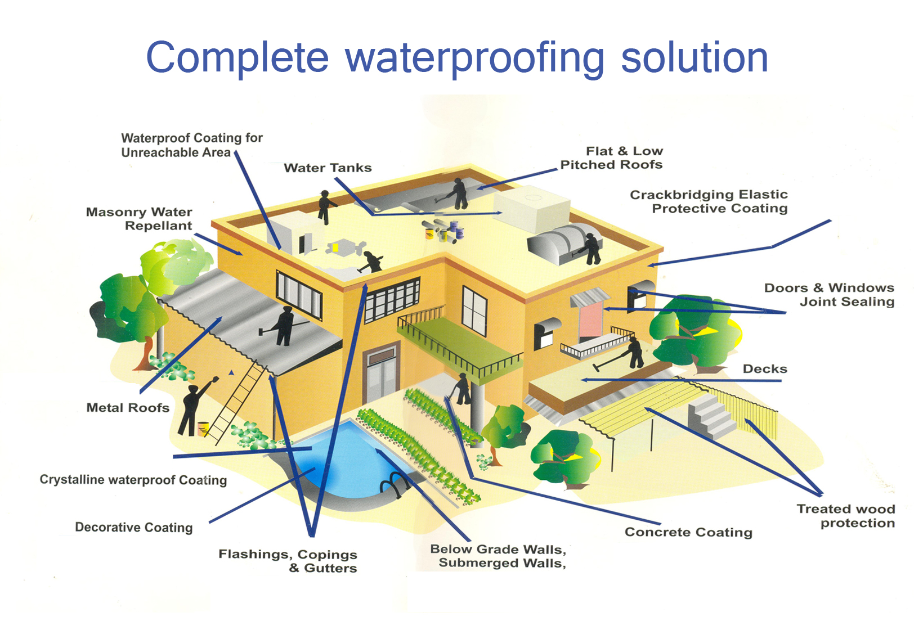

Power Generation and Clean Energy Resources
The last 100 years of human civilization has seen more technological progress than the last 5000 - and this has exponentially increased our usage of the resources of our planet. However, we have become victims of our own success, and we now face frightening ecological and economic consequences, due to global warming leading to climate change, pollution and, not the least, exhaustion of non-renewable sources of energy. The need to transition from our current sources of energy such as coal and oil to cleaner and renewable sources of energy are vital to prevent unmanageable exponential price rise while slowing down the harmful effects of global warming. For businesses around the world the key to success will depend upon how the challenges are approached.Energy Sustainability
Energy is a recurring expenditure that can constitute a significant expense for many enterprises. With rising energy costs and shortages of electricity, it is imperative that companies look to becoming more efficient in their use of energy. Additionally, improving sustainability and increasing the mix of renewable energy are now mandated by several companies with global operations. Governments are also making it mandatory for companies to become greener and reduce their carbon foot-print. With major corporations around the world setting up global offices in emerging economies like India and China, where social and national pressure mounting towards rapid economic growth with environmentally responsible business is highly sought, it is not surprising that the 'Green' importance of business is being taken very seriously. A fairly large proportion of global revenues being generated in the emerging markets have ensured that environmental consideration (of which energy is an important component) at an organizational level is closely aligned to the business strategy. Clean Energy makes Business Sense At A. D. GLOBAL SYNERGIES PRIVATE LIMITED, we define the practice of improving energy efficiency through innovation and introducing renewable energy wherever possible as "Clean Energy". Inculcating efficient energy management practices or revisiting internal systems across the enterprise often leads to reduction in costs, new revenue streams and even resulting in innovative business models. The clear brand advantage with customers, investors and employees is over and above the long term benefits an organization will reap with sustainable business practices.
Waterproofing Repairs & Rehabilitation of Structures
A. D. GLOBAL SYNERGIES PRIVATE LIMITED provides Total Waterproofing Solutions for new and old constructions and is concerned with the production of a wide and diverse range of second generation waterproofing products. Overview
A. D. GLOBAL SYNERGIES PRIVATE LIMITED regards itself as a "Multi-Domestic" company, putting the needs of its local customers at the very centre of its business activities. The company's products and systems, backed by comprehensive service packages, are carefully tailored to local market needs. On a local level, A. D. GLOBAL SYNERGIES PRIVATE LIMITED always puts this sound business principal into practice.
We strive to provide value-added products and full solutions. Our products and systems are used in almost every aspect of modern living, from building bridges, dams, roads and harbours to high-rise buildings. Our technology is also used for building cars, trucks, buses, boats and industrial products. When using A. D. GLOBAL SYNERGIES PRIVATE LIMITED systems, quality, durability and sustainability are added to concrete.
Our Promise: A. D. GLOBAL SYNERGIES PRIVATE LIMITED is a global company with a world-wide network of subsidiaries active in the fields of speciality chemicals for construction and industry. We are committed to quality, service, safety and environmental care. Our world-leading branded products are all proven solutions and are based on our core capability in the following areas: Sealing, Bonding, Damping, Reinforcing and Protecting.
Our Values: Each product and service reflects our commitment to the three core values that define our company: Innovation, Consistency, and Partnership.
Our Voice: We speak from experience and with a global understanding. We talk knowledgeably about the local and geographical issues faced by our customers. We respond to our customers quickly, wherever they are, in an approachable and friendly way.
Wall and Floor Profiling and Maintainence Services
A. D. Global Synergies Private Limited is a leading building product manufacturer and supplier for cladding walls, ceilings and floors. As a manufacturer and supplier of finishing materials in plastic (mainly PVC) and wood composite material (a mixture of plastics and wood, also called WPC), we provide high-quality decorative home improvement solutions, offering differentiated products to meet specific customer needs. All products are manufactured to meet the highest standards. Thanks to our in-house compounding facility we are able to offer our PVC product range at very competitive prices.
Overview
As the biggest pvc panels manufacturer, we at A. D. Global Synergies Private Limited, are mainly specialized in pvc panels, pvc walls, pvc ceilings and pvc sidings. With an experience of more than 15 years professional PVC panels, plastic panels research and manufacturing, we are ready to offer you the best quality pvc panels, walls, ceilings and vinyl sidings; the most effective way to repair the flat with plastic sheeting; the most professional solutions to solve construction problems with pvc panels, plastic panels and vinyl sidings.
We have a stable manufacturing capability of 100HQ per month for pvc walls and pvc ceilings. Our regular pvc panels' sizes range from 4.5mm to 10mm. Special sizes to be designed according to the demands. The surface treatments of the pvc panels (pvc walls, pvc ceilings, sidings) include print, transfer, high glossy, hot foil, pearl glossy, etc. The patterns we have for pvc wall panels and ceiling panels can be divided into marble, wooden, natural, bamboo, oak, etc over 2000 patterns with different colors of mother board. For a better quality of the pvc panels, we execute the strict QC system in pvc raw material purchasing manufacturing and surface treatment.
ELASTIC products attach much importance to a green and sustainable policy. Our environmental policy therefore receives a prominent place in our overall business philosophy. As we want to limit our environmental impact to a minimum, we are constantly looking for a healthy blend of economy and ecology. Harmonization of these two seeming opposites, does not have to mean that the general company development or the high quality level of our products will be in jeopardy. For it is only by making investments for future developments in a sustainable way that we can guarantee long-term growth.
Foreign Trade Activities
In today's fast paced, global business environment the use of a trusted intermediary allows your business to focus on what you do best. We can be relied on to act as your agent and bring the necessary parties together to complete your deal. A.D. GLOBAL SYNERGIES PRIVATE LIMITED is dedicated to conducting business in a professional and honest manner. We pride ourselves on our integrity and hold that as a core value of the company. Each member of our company is evaluated on their technical abilities as well as their understanding of ethical business practice. We realize that responsiveness is sometimes lost when dealing with consultants or outside vendors and we strive to maintain accessibility and the highest level of customer confidence.
Certified Quality Management
Power generation and industryA. D. Global Synergies offers solutions and products that are able to increase the competitiveness, products quality, process innovation, plant security and environmental compliance of its clients. The range of solutions dedicated to generation plants includes. With its management and technical consulting. Assistance in procurement, such as specifications and tendering procedures, including technical and economic evaluation of offers Operation & Maintenance activity, with particular emphasis on the Asset Management A. D. Global Synergies plays a key-role in the field of the hydroelectric power plants, from the inspections for monitoring advice, geotechnical investigations, hydraulic and hydro-dynamic tests on site, up to structural finite element numerical modeling both for static and dynamic safety checks. Plan, design and technical support to construction for power plants and real time monitoring applications are by far our best expertise.
Engineering and environment
Protect public health by safeguarding, preserving, and enhancing the environment. A. D. Global Synergies is esteemed as a technological leader in the national market and aims to develop sustainable processes along the entire energy value chain: from the generation to the final users, such as industrial plants. A.D. Global Synergies can model and forecast emission impacts, thanks to its technicians and consultants' expertise, a mixture of deep knowledge of legislative norms and strong analysis of environmental data. The range of services includes: Environmental Master plans Environmental Due Diligence of industrial plants Assessment and prevention of risks due to industrial activities A.D Global Synergies is working with the public administration with the purpose to assure civil structure monitoring. Moreover, diagnostics of the territory and mitigation of natural hazards such as landslides, floods, avalanches and earthquakes, preparation of emergency plans to be implemented in case of disaster are our engineers' core competences.
Power Transmission & Distribution
In this market A. D. Global Synergies is an undisputed technological leader in consulting and engineering activities and in the development of methodologies and software tools. Energetic and environmental master plan Feasibility studies for the interconnection of HV networks for both AC and DC solutions Integration of renewables on HV and MV networks Increasing of reliability, availability and quality of the grid Systems of Energy management and Energy trading Civil and Structural Engineering
Renewables and storage
Climate changes are considered today as a global issue. Energy and utility industries can successfully contribute towards solving a shared problem. Clients are offered a full range of consulting services designed to develop renewable generation and energy storage, technologies and applications offering project planning, integration to MV and HV network, and operation of renewables. Energy storage like battery technologies, superconducting magnetic energy, capacitors, compressed air and pumped storage, seems to be an alternative method that the operator of an electrical power grid can use to adapt energy production to energy consumption, both of which can vary randomly over time. Renewables also help the electric power industry maintain a diverse fuel mix for electricity generation. Fuel diversity helps to ensure reliable, affordable electricity for our nation's households and businesses.